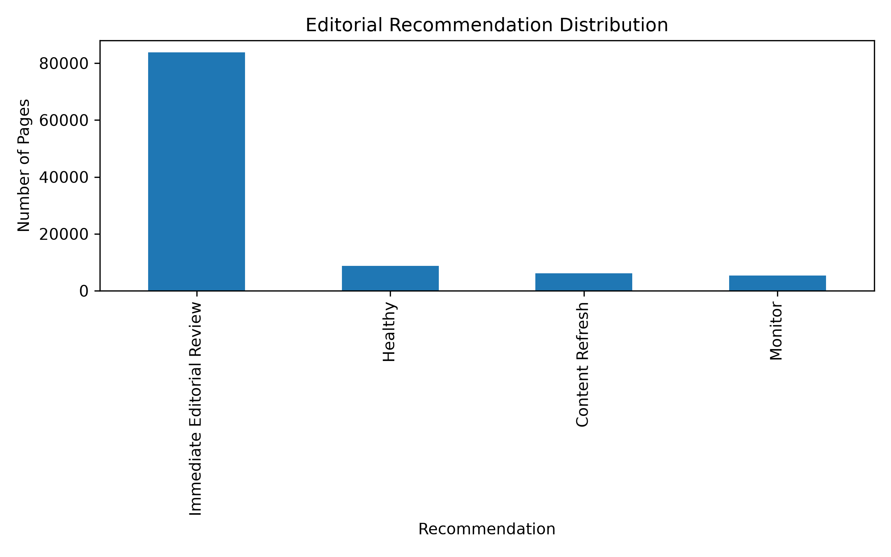

Editorial teams managing large websites often face the challenge of identifying which webpages require immediate review among hundreds of thousands of published pages. This project presents an end-to-end machine learning pipeline that predicts webpages requiring editorial attention using anonymized Google Search Console (GSC) and Google Analytics 4 (GA4) warehouse data provided through the FlyRank Machine Learning Internship. The workflow includes data ingestion, exploratory data analysis, preprocessing, feature engineering, supervised model training, explainability analysis, and an editorial recommendation engine. Logistic Regression and Random Forest classifiers were evaluated on the same stratified train-test split, with the Random Forest model achieving the strongest predictive performance (Accuracy: 93.64%, Precision: 96.07%, Recall: 96.81%, F1-score: 96.44%, ROC-AUC: 95.24%). The resulting recommendation engine prioritizes webpages into actionable editorial categories, providing a practical decision-support system for content teams.
Large websites continuously publish and update thousands of webpages, making manual editorial review increasingly difficult. Limited editorial resources require content teams to determine which webpages deserve immediate attention based on search visibility, user engagement, and overall content quality.
This project investigates whether supervised machine learning can assist editorial decision-making by automatically identifying webpages that should be prioritised for review. Using anonymized warehouse data from Google Search Console (GSC) and Google Analytics 4 (GA4), a complete machine learning pipeline was developed to transform raw search and engagement metrics into ranked editorial recommendations.
Unlike a simple classification model, this project demonstrates an end-to-end production-style workflow consisting of:
Rather than replacing human editors, the proposed system serves as a decision-support tool that helps prioritise editorial effort using measurable search and engagement signals.
The dataset used throughout this project was provided as part of the FlyRank Machine Learning Internship. It consists of anonymized warehouse data derived from Google Search Console (GSC) and Google Analytics 4 (GA4). To preserve privacy, no client names, domains, URLs, credentials, or raw search queries are included.
Four warehouse tables were used during the machine learning pipeline:
Following preprocessing, missing numerical values were imputed using median values where appropriate, duplicate records were removed, and engineered numerical features were created for model training. These processed datasets were merged into a unified feature store that served as the input for the predictive models.
The objective of this project was to build a reproducible machine learning pipeline capable of identifying webpages that require editorial review using anonymized search performance, engagement, and engineered content features.
The complete workflow consisted of seven sequential modules:
Instead of relying on a single engagement metric, an editorial review label was constructed using multiple business rules. Each webpage received one point for satisfying each of the following conditions:
Pages receiving a score of three or more were labelled as requiring editorial review.
Eleven engineered numerical features were selected for model training, including content characteristics and search behaviour signals.
Two supervised machine learning models were evaluated using the same stratified 80/20 train-test split.
Model performance was evaluated using Accuracy, Precision, Recall, F1-score, ROC-AUC, and Confusion Matrix.
Both the Logistic Regression baseline and the Random Forest classifier were evaluated using the same held-out test dataset. The Random Forest model consistently outperformed Logistic Regression across almost every evaluation metric while also achieving substantially better ranking performance.
| Model | Accuracy | Precision | Recall | F1-score | ROC-AUC |
|---|---|---|---|---|---|
| Logistic Regression | 0.8993 | 0.9012 | 0.9959 | 0.9462 | 0.7488 |
| Random Forest | 0.9364 | 0.9607 | 0.9681 | 0.9644 | 0.9524 |
The Random Forest classifier achieved the strongest overall predictive performance, balancing precision and recall while also producing the highest ROC-AUC score of 0.9524. These results indicate that engineered content and search features are highly effective for identifying webpages requiring editorial review.

Model explainability was performed using Random Forest feature importance. The analysis identified rare_query_count as the most influential predictive feature by a large margin, followed by word_count, char_count, keyword_token_count, url_char_count, search_volume, and competition.
These findings suggest that search query diversity together with content characteristics contribute strongly to editorial review decisions.

The trained Random Forest model was integrated into an editorial recommendation engine. Instead of producing only binary predictions, each webpage receives an editorial probability and is categorised into one of four actionable recommendation groups:
Across more than 103,000 evaluated webpages, the recommendation engine produced the following distribution:
| Recommendation | Pages |
|---|---|
| Immediate Editorial Review | 83,772 |
| Healthy | 8,708 |
| Content Refresh | 6,133 |
| Monitor | 5,309 |
This ranking-based approach enables editorial teams to prioritise resources efficiently by focusing on the webpages predicted to require the greatest attention first.
Although the proposed pipeline achieved strong predictive performance, several limitations should be acknowledged.
The final stage of the pipeline converts model predictions into actionable editorial recommendations. Rather than producing only binary classification outputs, webpages are ranked according to their predicted probability of requiring editorial review.
Based on the predicted editorial probability, webpages are assigned to one of four priority levels:
| Priority | Recommended Action |
|---|---|
| Immediate Editorial Review | High priority pages requiring immediate investigation and content improvement. |
| Content Refresh | Update outdated content, improve metadata, strengthen internal linking, and review keyword targeting. |
| Monitor | Continue monitoring performance trends before applying significant editorial changes. |
| Healthy | Maintain current strategy and continue routine performance monitoring. |
This ranking framework allows editorial teams to allocate resources more efficiently by focusing first on webpages with the highest predicted editorial need.
Figure 3 illustrates how webpages are distributed across the four editorial recommendation categories generated by the recommendation engine.

The recommendation engine classified the majority of webpages as Immediate Editorial Review, indicating that a large portion of pages satisfy multiple low-engagement conditions. Smaller groups were categorized as Content Refresh, Monitor, and Healthy, allowing editorial teams to prioritize optimization efforts based on predicted editorial need.
This project was implemented entirely using open-source Python tools and follows a modular machine learning pipeline designed for reproducibility.
The complete implementation, source code, reports, generated artifacts, and documentation are publicly available in the project repository.
GitHub Repository
https://github.com/MUKUL-TIWARI/flyrank-ml-internship
The repository contains all scripts, reports, trained models, feature engineering outputs, recommendation artifacts, and documentation required to reproduce the complete workflow.
This work was completed as part of the FlyRank Machine Learning Internship.
The anonymized warehouse dataset used throughout this project was provided by FlyRank for educational and research purposes.
The project complies with the internship's public sharing guidelines by excluding client names, domains, URLs, credentials, private search queries, and raw warehouse exports.
Built on the FlyRank ML Internship dataset.
Data Source: https://flyrank.ai
© 2026 Mukul Tiwari
FlyRank Machine Learning Internship Capstone